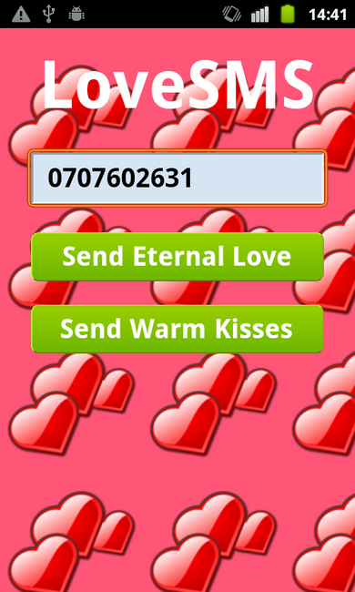

It is fun to send text messages with smileys to friends and loved ones. But it is time consuming to type in lots smileys on a phone. WebViewLoveSMS is an app you can use to easily send messages with lots of heart or kiss smileys to your loved one.

This example runs on all platforms supported by the MoSync Wormhole JavaScript Library (see Feature/Platform Support).
This example is included in the MoSync SDK installation in the /examples folder. For information on importing the examples into your workspace, see Importing the Examples.
When this application starts up, the user is shown the main screen where the telephone number of the loved one can be entered.
There are just two buttons. Tapping either button send a 140-character SMS to the loved one. The Send Eternal Love button sends a repeated string of "<3" characters. The Send Warm Kisses button sends a string of ":-*" characters.
The phone number is stored on the device and will be displayed next time the application is started. (Just one phone number saved — because, after all, this is an application to be used with your loved one...)
This example application is implemented in HTML and JavaScript, and uses the MoSync Wormhole Library to access device services from JavaScript via C++. The Wormhole Library is used for sending text messages and storing data on the device, services that you normally cannot access from JavaScript. You can find the full source code of the application on GitHub.
Here is the JavaScript code used in the app for sending a text message:
mosync.bridge.send(['Custom', 'SendSMS', GetPhoneNo(), textMessage]);
mosync.bridge.send is a JavaScript function that enables sending messages to C++. In the above example, the message consist of an with the message parameters. When the first element is 'Custom', the message gets routed though a lookup table of custom methods on the C++ side.
The C++ code of the app is in file LoveSMS.cpp, where you find the class LoveSMSMoblet, which inherits HybridMoblet, a central class in the Wormhole Library. The HybridMoblet class automatically creates and configures a WebView widget (a widget in the MoSync Widget API) for the application. It listens for events from the web view and calls custom methods registered in the lookup table.
Here is hos custom methods are registred in the constructor of LoveSMSMoblet:
addMessageFun(
"SendSMS",
(FunTable::MessageHandlerFun)&LoveSMSMoblet::handleSendSMS);
addMessageFun(
"PageLoaded",
(FunTable::MessageHandlerFun)&LoveSMSMoblet::handlePageLoaded);
And here is the implementation of the method that handles the "SendSMS" message:
void handleSendSMS(MessageStream& message)
{
// Save phone no and send SMS.
savePhoneNoAndSendSMS(
message.getNext(), // phoneNo
message.getNext()); // message
}
The call message.getNext() returns the pointer to the next string in the message array. MessageStream is a class in the Wormhole library that helps with parsing the data recieved from the web view.
A great way to learn how to author HTML5 applications in MoSync is to modify the LoveSMS app in various ways. You can easily change the background image and the color of user interface elements, to create your own personal unique look for the app. Check out this blog post for further details.